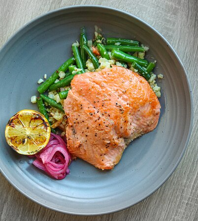

Maple Salmon

Description
This maple glazed salmon is delicious and very easy to prepare. If you love maple syrup, you'll love this too,
Ingredients
- ¼ cup maple syrup
- 2 tablespoons soy sauce
- 1 clove garlic, minced
- ¼ teaspoon garlic salt
- ⅛ teaspoon ground black pepper
- 1 pound salmon
Direction
- Stir maple syrup, soy sauce, garlic, garlic salt, and pepper together in a small bowl.
- Cut salmon into 4 equal-sized fillets; place in a shallow glass baking dish and coat with maple syrup mixture. Cover the dish and marinate salmon in the refrigerator for 30 minutes, turning once halfway.
- Preheat the oven to 400 degrees F (200 degrees C).
- Place the baking dish in the preheated oven and bake salmon uncovered until flesh easily flakes with a fork, about 20 minutes.
Tips:
Cooking salmon is not as simple as placing in oven for x amount of time. You should cook salmon based on thickness.
Home